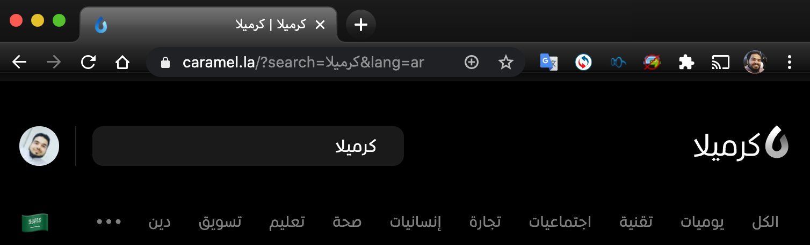
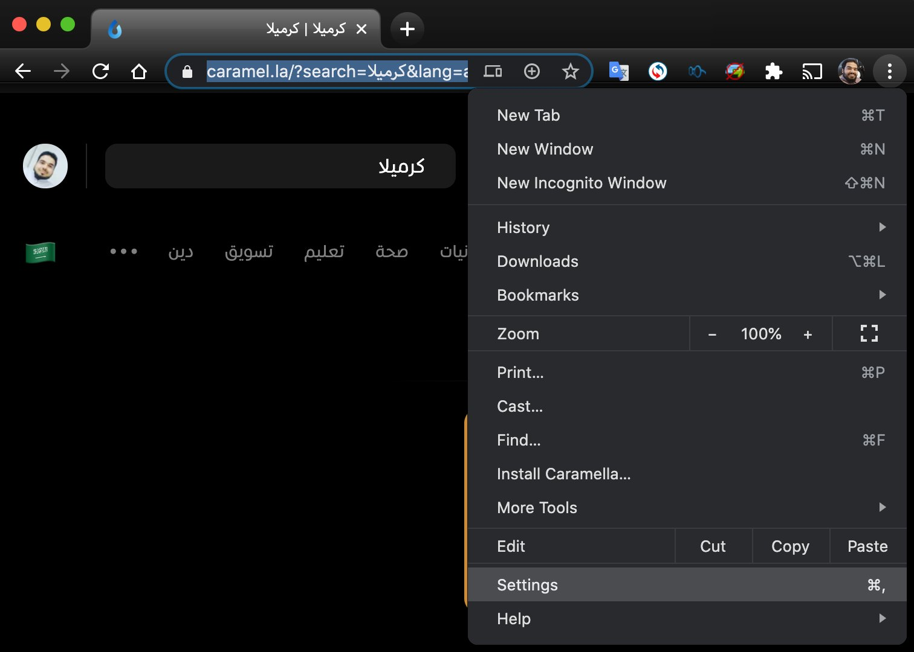
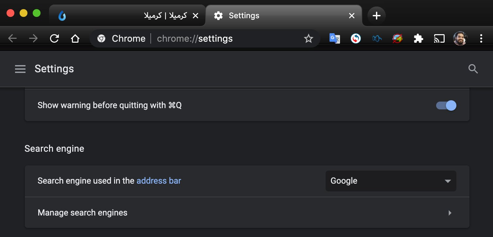
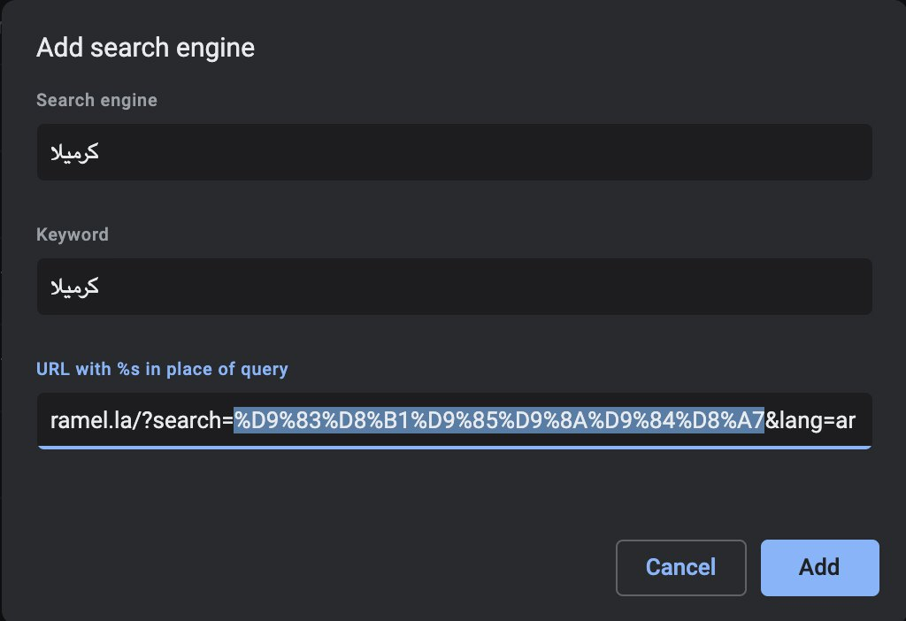

ابحث في كرميلا بسرعة
العالم أصبح كله رقمي سريع. وكل يوم عن يوم يزيد البشر من تسخيرهم للتقنية بشكل كبير لتعمل من أجلهم. فمن الحماقة أن نأخذ من جبروت التقنية القليل وكأننا فقراء تقنياً. هذه التدوينة من أجل أن تزيد مهاراتك في البحث على الإنترنت بشكل سريع، بحيث تستطيع البحث في أي موقع تقريباً وأنت لست في الموقع. فقط من خلال الشريط العلوي في المتصفح.
هنالك نوع جديد من الفقر وهو الفقر التقني. سخر الآلة لتعمل من أجلك. لا تكن فقير تقنياً
محمد جبلي
الخطوات العملية
قم بفتح المتصفح
قم بالدخول على الموقع الذي تريد أن تسرع البحث فيه وفي مثالنا الحالي كرميلا
ابحث بنظرك في موقع حتى تجد شريط البحث في الموقع “كرميلا” كمثال
أكتب في شريط البحث أي كلمة وقم بالبحث

قم بنسخ الرابط الذي سيظهر لك في الشريط العلوي كما هو مبين في الصورة أعلاه
أدخل على إعدادات المتصفح كما هو موضح في الصورة أدناه

قم بالنزول في الإعدادات حتى تجد الإعدادات الخاصة بمحركات البحث Search engine كما هو واضح في الصورة أدناه

اضغط على إدارة محركات البحث Manage search engines
اضغط على زر إضافة Add تجده بجوار “محركات البحث الأخرى” Other search engines كما هو ظاهر في الصورة أدناه

قم بكتابة اسم محرك البحث Search engine بالعربي أو الإنجليزي مثلاً “كرميلا”
في خانة Keyword وهي الخانة الأهم أكتب الكلمة التي بإمكانك تذكرها بسرعة عندما تريد البحث في كرميلا كمثال. أنا كتبت أيضاً بالعربي كرميلا. أنت بإمكانك كتابة ماتشاء ولكن تذكر أنها مهمة وبإمكانك تغييرها في أي وقت بدون مشاكل
في خانة الرابط URL، قم بإلصاق الرابط الذي قمنا بنسخه عندما أجرينا عملية البحث في كرميلا
الآن قم بتغيير مكان كلمة البحث ب “s%” كما هو موضح في الصورة. للتنبيه عندما تبحث بالعربي وتنسخ الرابط قد يظهر لك بالشكل الموجود في الصورة أدناه فعليك الانتباه أي توجد كلمة البحث التي تحتاج إلى تغييرها بالعلامة المذكورة
اضغط على زر إضافة Add


إن شعرت بصعوبة ولم تعرف مكان كلمة البحث فلديك حلين:
١- غالباً كلمة البحث التي تحتاج إلى تغييرها تكون بعد علامة مساواة = وقبل علامة & وهذا ليس شرطاً قد تكون بين شرطتين مائلتين / / أو بعد الشرطة الأخيرة
٢- ممكن أن تسهل الأمر على نفسك وتبحث في الأصل بكلمة إنجليزية مثلاً TEST فعندما تحتاج لتغيير كلمة البحث إلى s% كلما عليك فعله هو البحث عن TEST وتغييره بالرمز. سيكون واضحاً جداً
التجربة الفعليه
الآن أفتح صفحة جديدة في المتصفح
اكتب في الشريط العلوي الكلمة التي وضعتها في Keyword في حالتي كانت كرميلا
أضغط تاب Tab في الكيبورد أو زر “الحقول” إن كان كيبوردك كيبورد ماك بالعربي :)

الآن أفتح صفحة جديدة في المتصفح
أكتب في الشريط العلوي الكلمة التي وضعتها في Keyword في حالتي كانت كرميلا
أضغط تاب Tab في الكيبورد أو زر “الحقول” إن كان كيبوردك كيبورد ماك بالعربي 🧐
أكتب الكلمة التي تريد البحث عنها مثلاً “محمد جبلي”
اضغط انتر Enter أو “الرجوع” إن كان كيبوردك بالعربي 😒
ستظهر لك نتائج البحث كما هو ظاهر في الصورة أدناه

ستظهر لك نتائج البحث كما هو ظاهر في الصورة أدناه
سيظهر لك حسابي في كرميلا اضغط زر متابعة 😁